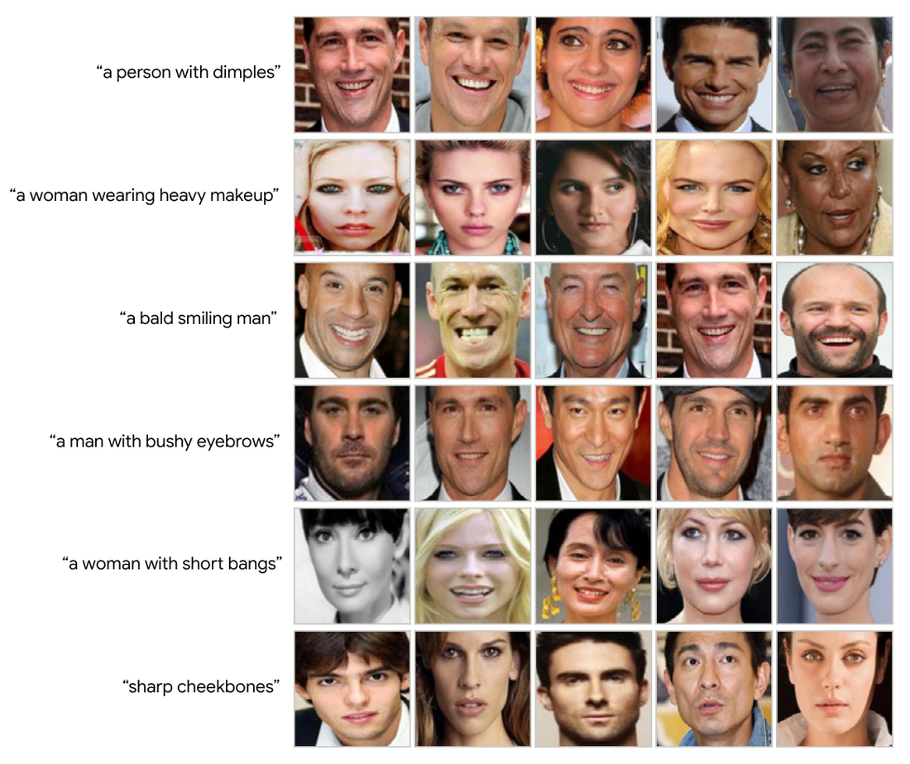
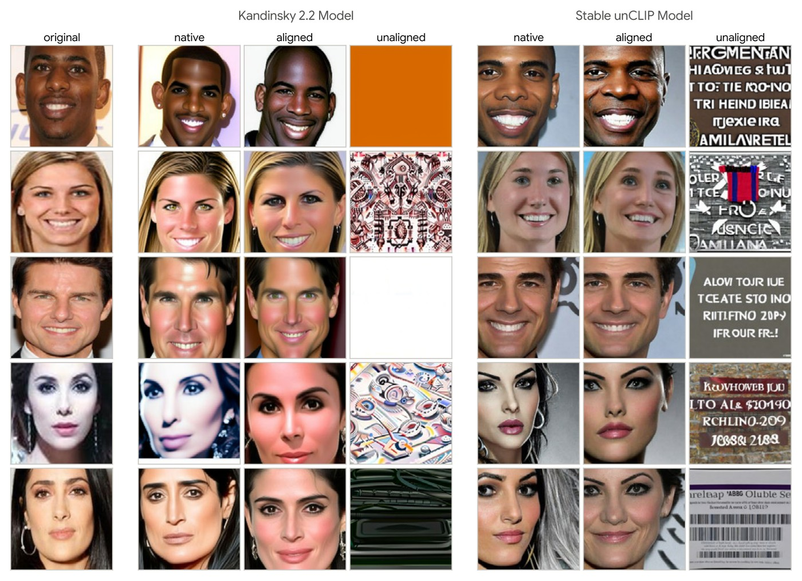
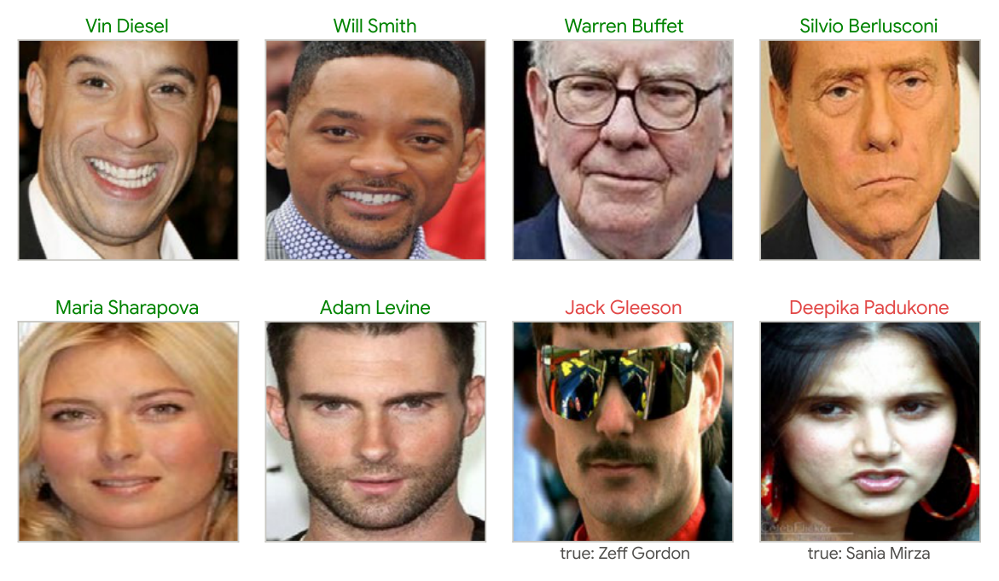

Unmasking Face Embeddings:
|
AbstractModern face recognition (FR) owes much of its success to deep neural networks that learn compact identity embeddings from face images. These embeddings are highly effective for biometric matching but largely opaque to semantic interpretation. In contrast, foundation models, pretrained on broad visual or vision-language tasks, provide rich interfaces for describing, retrieving, generating, and organizing visual content. This raises a question: what capabilities become available when face embeddings from domain-specific FR models are made interoperable with foundation models? Building on recent work on embedding compatibility, we use simple pre-computed linear transformations, estimated from paired embeddings alone, to connect existing FR models with off-the-shelf foundation models. Once aligned, a face embedding can be “unmasked” in multiple ways, without training or modifying either model: it can be read in natural language, enabling free-form text queries over a gallery of FR embeddings; rendered into a face image that recovers a person's appearance, using an unmodified diffusion decoder; and converted to a name, enabling identification even without an enrolled face gallery. In effect, one linear transformation turns an identity embedding into a rich embedding for web-scale foundation models, exposing face embeddings as semantically and visually rich representations, with implications for interpretability, retrieval, reconstruction, and template security. |



BibTeX@inproceedings{rubab2026unmasking,
title = {Unmasking Face Embeddings: Reading, Rendering and Naming with Foundation Models},
author = {Rubab, Fizza and Tong, Yiying and Ross, Arun},
booktitle = {European Conference on Computer Vision Workshops (ECCVW)},
year = {2026}
}
|
This website is licensed under a Creative Commons Attribution 4.0 International License. |